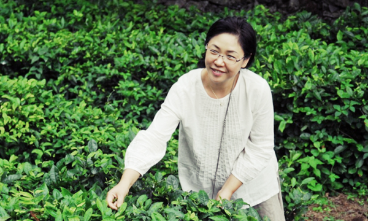

Home
(current)
장흥다원안내

장내순
장흥다원, 청태전영농조합법인 대표
이력
2002년: 전남강진 백련사 백련다원 운영
2006년: 장흥다원 설립
2007년: 야생차밭 13ha 친환경인증
2010년: 청태전영농조합법인 설립
2013년: 국제슬로푸드 "맛의 방주(Ark of Taste)" 등재
2014년: 국제생명다양성재단 프레시디아(Presidia) 등재
2014년: 일본 세계녹차 콘테스트 최고금상 수상
2015년: 일본 세계녹차 콘테스트 금상 수상
인증
도지사명풍인증
대한민국스타팜(StarFarm) 지정
농림부 우수체험공간 지정
농촌 진흥청 농촌교육농장 품질인증